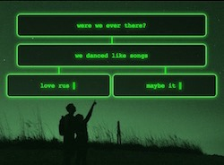

Marta Kule
Web developer with editorial background.
Projects
React Redux Challenge
I built this for a coding challenge that required a JavaScript app to browse JSON Placeholder data. I came up with a use of React Router to create direct links to users or albums. [Currently offline]

React Recipe Search
I made my first React app while at Bridge School, before I learned Redux, so it relies on component state. Functional programing aside, the highlight for me was adding an orange slice for the loader.
JavaScript 30
Wes Bos's JavaScript 30 is a challenge in writing everything in pure JS, with preference for ES6. To keep up the challenge, I built my landing page without libraries as well, including the menu and routing.
Stupid Hackathon
Fun trumped programming at Toronto's 2017 Stupid Hackathon, where my brother (full-stack dev) and I came up with a truly useless wireless string telephone. He made the videos, I made the website.
Photo Research
This simple website was my playground for fixed backgrounds. Since I needed content, I wrote an article about best practices in selecting photos for textbook illustrations.

Programmed Poem
A poet friend asked me if I could write a poem in code. That inspired me to build a choose-your-own-adventure poem with jQuery. I was going for an old-computer feel, but you actually have to click.
Sortable Paragraphs
When I worked in a publishing house, I was building interactive exercises that students would use with their textbooks. Here I used jQuery UI for a drag'n'drop paragraph sorting activity.

Bar Chart
Thinking of data visualization without using a separate library on top of jQuery, I came up with an animated bar chart made out of divs: the values to be shown become the bars' percentage widths.